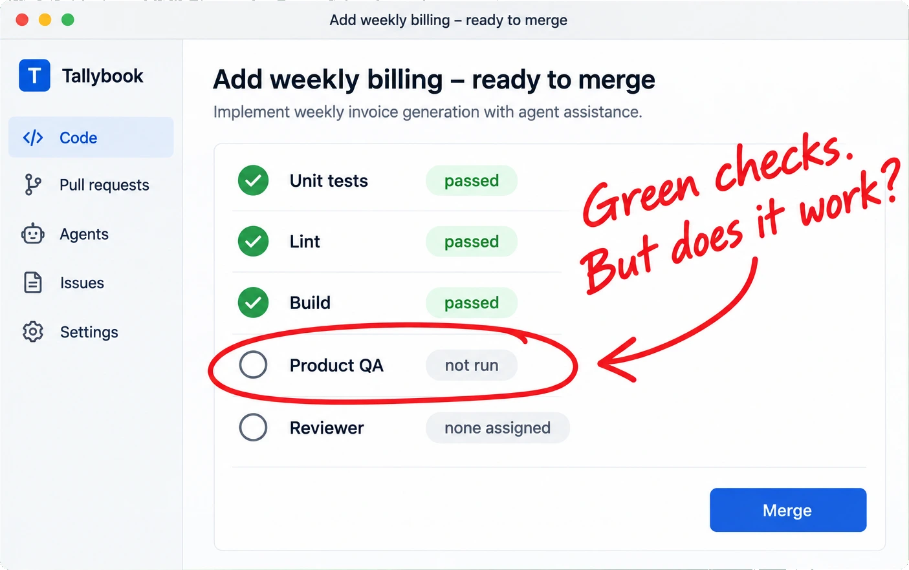
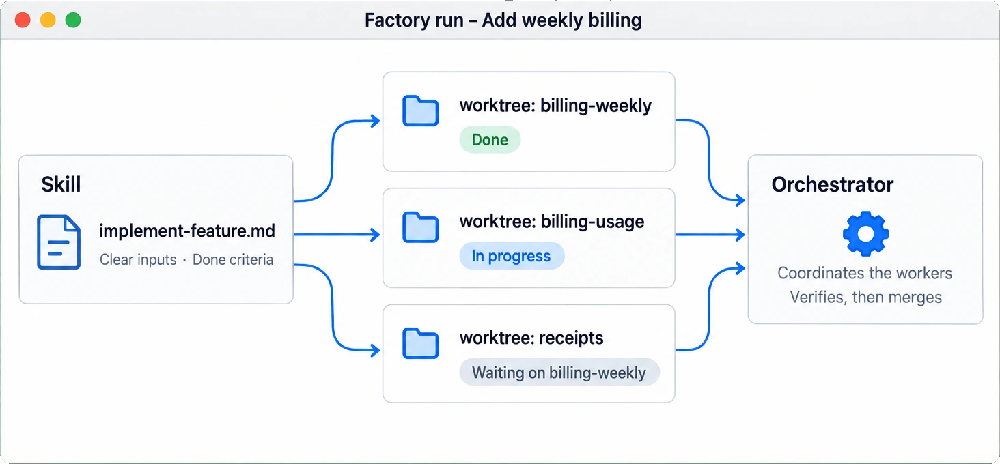
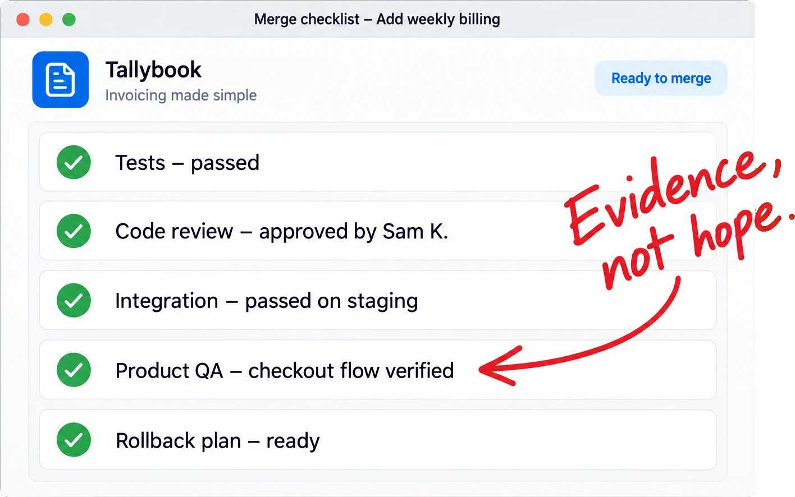

DORA’s 2025 report describes AI as an amplifier of an organization’s existing strengths and weaknesses. The returns come from the underlying system, not the tools.
Without evidence, you can’t tell fast from fragile.

In a randomized trial of 16 experienced open-source developers, tasks took 19% longer with AI tools. Afterward, they still believed AI had made them 20% faster.
Write down the product goals, architecture, constraints, and code patterns before work is delegated. People keep ownership of the product decisions and tradeoffs.
Turn what works into a repeatable process

Experiment first, then encode what works as skills: clear inputs, explicit dependencies, and defined completion criteria. Isolate concurrent changes and let an orchestrator coordinate the workers.
Build trust into the factory

At every level of delegation, ask what evidence lets you trust the result? Meaningful tests, review, CI/CD, and product-level QA. Then grow the factory with your team, one step at a time.
From possibility to product
Arcturus Labs can help
Product direction. AI behavior. Agentic engineering.
“Building a multi-agent therapist training simulator from scratch is a massive undertaking. Arcturus Labs provided the foundational architecture, a sophisticated strategy, and hands-on work that gave us the ability to train and refine our Patient, Coach, and Evaluator agents into a reliable, evidence-based training platform.”
Laura Murray, Founder, CETA Global; Head of Global Mental Health at Google
“Arcturus Labs took a complex, email-driven process and turned it into a systematic, AI automated workflow. And the research agent cut through the noise of hospital shortages, and was able to identify substitutes in a fraction of the time it would take staff.”
“The strategic assessment from Arcturus Labs was a turning point for our product. By implementing their 'participatory experience' model, we are empowering our users to guide the AI, leading to higher confidence and much better data outcomes.”